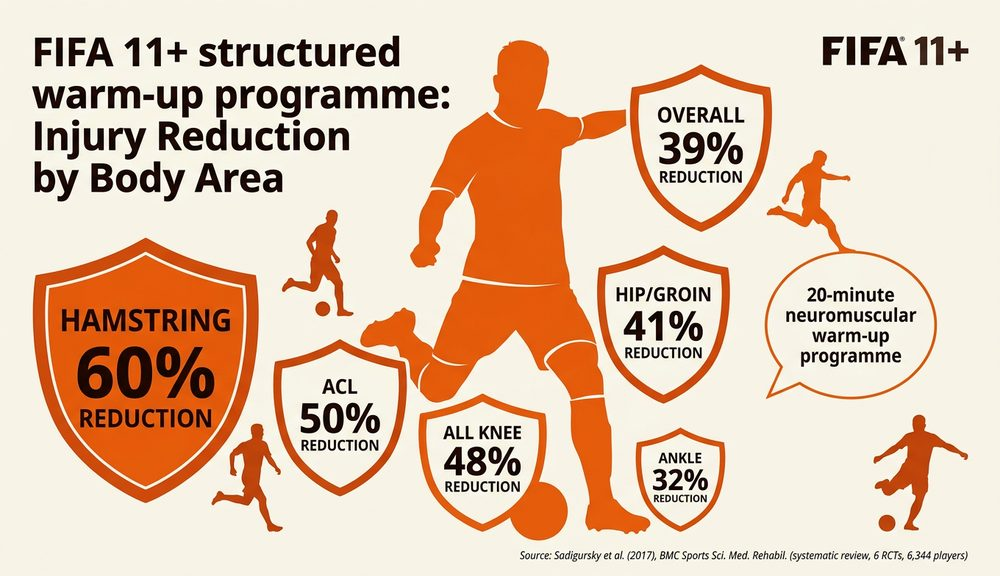

Why Warm Up?
A warm up is a series of exercises performed before a workout or sporting activity. Its purpose is to prepare the body for the demands of exercise, improve the quality of performance and lower the risk of injury.
A thorough warm up should last at least 15–20 minutes. Skipping or rushing a warm up significantly increases the chance of muscle strains, ligament sprains and other soft-tissue injuries during physical activity.
The Four Key Components of a Warm Up (PRMS)
Every effective warm up follows four stages, often remembered using the acronym PRMS: Pulse raiser, Range of motion (mobility), Muscle stretching and Sport-specific skill rehearsal. Each stage builds on the last to bring the body from rest to full readiness.
1. Pulse Raiser
A pulse raiser is light cardiovascular activity — such as steady jogging, cycling, skipping or side-stepping — designed to gradually increase heart rate. As heart rate rises, more oxygenated blood is pumped to the working muscles, providing the energy they need for more intense exercise ahead.
2. Mobility
Mobility exercises take joints through their full range of motion. Examples include arm swings, ankle rolls and hip circles. These movements increase the pliability of the ligaments and tendons around each joint, so the joint can move further during activity without causing damage.
3. Stretching
Stretching prepares the muscles to work through a full range of motion. There are two main types used in warm ups:
- Static stretching — holding a stretch in a fixed position for 15–30 seconds to lengthen the muscle gradually.
- Dynamic stretching — controlled movements through the range of motion, such as lunges, leg swings or high knees. Dynamic stretches keep the body moving and are more commonly used during warm ups.
Static stretching involves holding a position for 15–30 seconds to elongate a specific muscle. It is useful for improving flexibility but is best performed after the pulse raiser, when muscles are warm. Dynamic stretching uses controlled, repeated movements — such as walking lunges, leg swings and arm circles — to stretch muscles while keeping the body active. PNF stretching (proprioceptive neuromuscular facilitation) is an advanced technique where the performer contracts, then relaxes, a muscle while a trained partner pushes the limb further into the stretch. PNF is considered the most effective stretching method, but requires a knowledgeable partner to perform safely.
4. Skill Rehearsal / Sport-Specific
Skill rehearsal is the final stage. The performer practises movements and techniques from the actual sport they are about to play — for example, passing and shooting in football, rallies in badminton, or lineout throws in rugby. This means the body has completed most of the possible movements it will need in a safe, controlled environment before the activity begins.
Physiological Benefits of a Warm Up
A proper warm up triggers several important changes in the body that improve performance and reduce the risk of injury:
- Increase in muscle temperature — warmer muscles release energy more readily, become more flexible and are less likely to tear.
- Increase in heart rate — more oxygenated blood is pumped to the working muscles, providing the fuel needed for exercise.
- Increase in flexibility of muscles and joints — muscles can stretch further through their range of motion without damage.
- Increase in pliability of ligaments and tendons — connective tissues become more elastic and less prone to sprains.
- Increase in blood flow and oxygen delivery to muscles — capillaries dilate, allowing a greater volume of blood to reach muscle fibres.
- Increase in speed of muscle contraction — nerve impulses travel faster when muscles are warm, improving reaction time and power.
The physiological benefits of warming up all link together: higher muscle temperature leads to greater flexibility and faster contractions, while increased heart rate drives more oxygen to the muscles. Together, these changes prepare the body for high-intensity work and make injuries far less likely.

Psychological Benefits of a Warm Up
Warming up does not just prepare the body — it also prepares the mind. The psychological benefits include:
- Increased focus and concentration — the warm up gives the performer time to switch attention away from distractions and focus entirely on the activity ahead.
- Opportunity for mental rehearsal — the performer can visualise key movements, tactics and scenarios before the game or event begins.
- Reduced anxiety — following a familiar warm up routine creates a sense of structure and control, which helps calm nerves before competition.
- Increased confidence — completing a thorough warm up reassures the performer that their body is ready, boosting self-belief going into the activity.
Example Warm Up: Rugby
A 15-year-old rugby player preparing for a match might follow this warm up routine:
- Pulse raiser (5 minutes) — light jog around the pitch, gradually increasing speed. Side-stepping and backwards jogging to raise heart rate and warm up leg muscles.
- Mobility and dynamic movements (3–4 minutes) — hip circles, ankle rolls, arm swings. Walking lunges across the width of the pitch. High knees and heel flicks to take joints through their full range of motion.
- Stretches (3–4 minutes) — dynamic stretches such as leg swings (forward and side-to-side), hamstring sweeps and calf raises. Brief static holds (15–20 seconds) for the quadriceps and groin.
- Skill rehearsal (5 minutes) — passing drills in pairs at walking pace, building to game-speed passes. Short sprints simulating breakaways. Lineout throwing and catching practice.
This routine covers all four PRMS components, lasts around 15–20 minutes, and ensures the player’s cardiovascular, muscular and nervous systems are all prepared for the demands of a competitive rugby match.